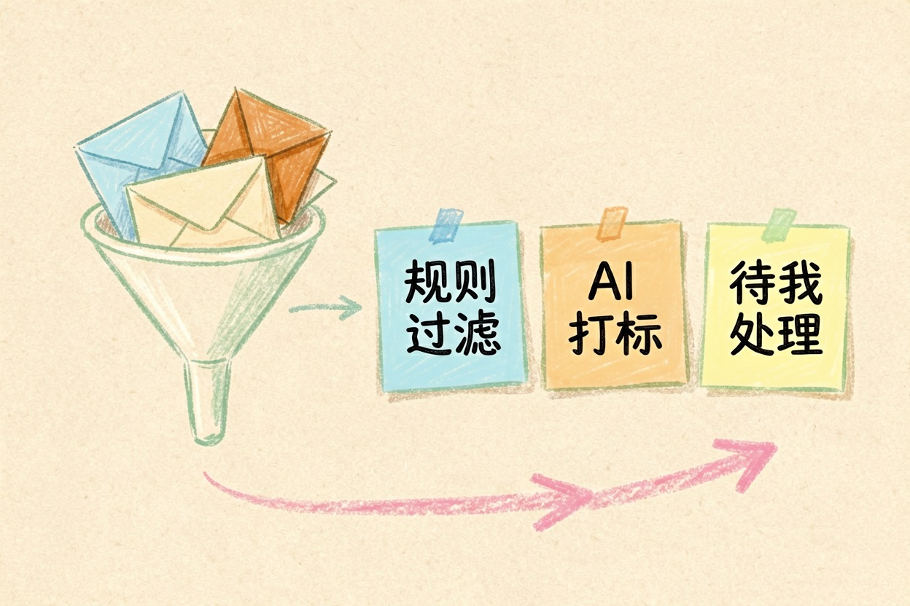
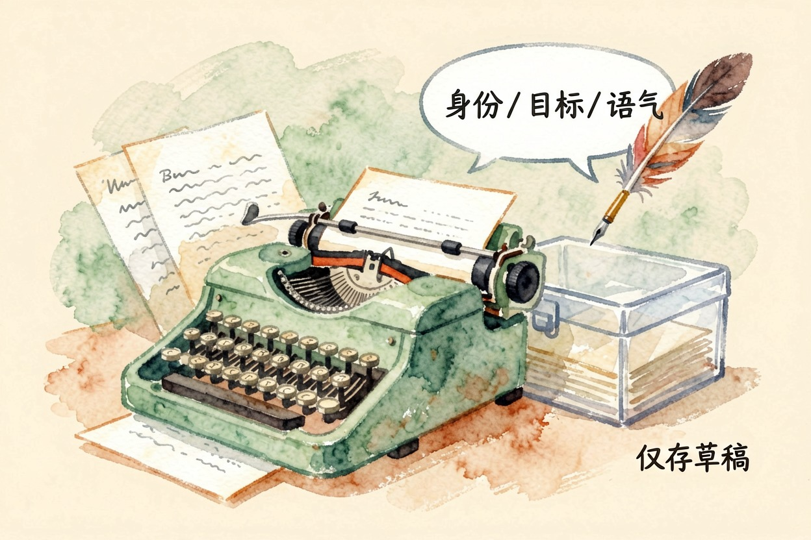
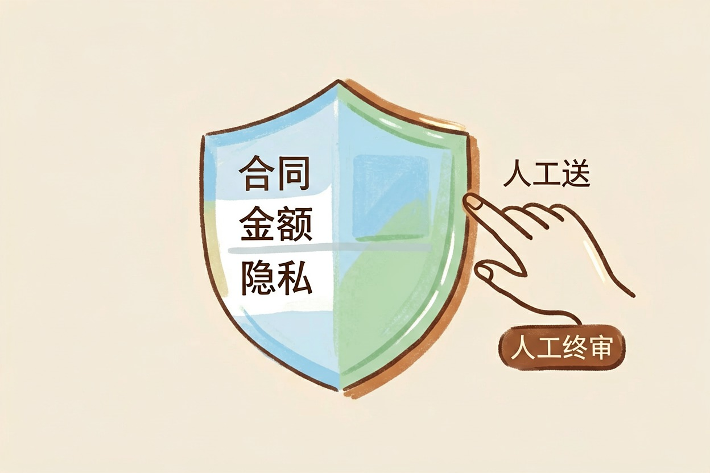
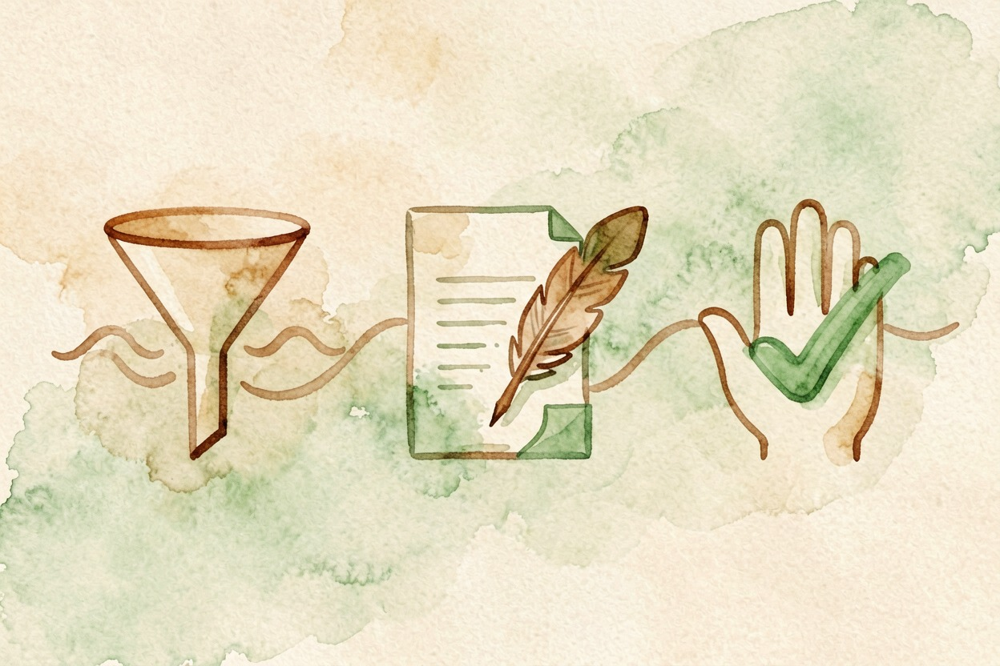

用 AI 自动整理收件箱？邮件分流与草稿 — Learntide
收件箱里真正要动脑的信不到两成。剩下那些例行通知，规则加模型基本能替你先过一遍。
ai自动整理邮件：先做分流，再做草稿

ai自动整理邮件说到底就两件事：把信分好类，再对高频类型先写一版草稿。顺序别反过来。分流没做好，草稿写得再顺也是白费力气。
多数人的收件箱结构其实很像：一堆系统通知、一堆抄送、一小撮真正要回的信。前两类靠规则能处理掉大半。
先把八成的噪音挡在外面，剩下两成才值得你亲自看。
工具其实不用换。多数邮箱自带过滤规则，模型那部分找个现成的自动化平台接一下就行。
邮件自动分类怎么做

第一步不是配工具，是把你自己的分类标准写下来。列五到八个文件夹，每个写清楚什么信该进来。
标签别设太多。超过八个，你自己都记不住哪个装什么。
能靠发件人域名、主题关键词判断的，一律交给邮箱自带的过滤规则。规则免费、即时、不会看走眼，没必要叫模型出场。
剩下那些必须读正文才能判断的，才交给模型打标签。
你是邮件分流助手。读下面这封邮件，只输出一行结果。
可选标签：待我处理 / 需我知晓 / 客户询价 / 账单发票 / 可忽略
判断依据：正文有没有明确要求我做某件事，以及有没有截止时间。
输出格式：标签|一句话理由|截止日期（没有就写无）
邮件正文：{{content}}让它把理由一起输出，你抽查时一眼就能看出是不是判歪了。
跑满两周再回头看一次。分错最多的那一类，问题通常出在标签定义写得含糊。
让 AI 起草回复，人来按发送

只有高频类型才值得配草稿模板，比如询价答复、会议改期、材料收到确认。一年遇上两回的信，自己写更快。
草稿提示词里要交代三样：你的身份、这封信要达成什么、语气分寸。少一样，出来的就是那种客气但没用的空话。
还有个小技巧。把你过去写过的三封同类回信贴进提示词，语气会立刻像你本人。
生成的草稿一律存进草稿箱，不直接发出去。ai处理邮件的方法有很多种，这一条是底线。
邮件自动回复怎么设才不出事
自动回复只适合两类场景：休假期间的告知，以及收到即回的确认。内容固定、不含判断，才算安全。
设置时记得加触发限制，同一个发件人一天只回一次。否则两台自动机能互相客气到天亮。
范围要写死。白名单之外的信，一律不触发。
带报价、带时间承诺、带附件的信，一律不进自动回复的白名单。这类信让对方多等两小时，好过发错一句收不回。
哪几类信别交给它
涉及金额、合同条款、人事安排的邮件，别让模型独立处理。它写得很像那么回事，代价却由你来担。
再就是隐私。把整封邮件贴给第三方服务之前，先想清楚里面有没有客户身份信息、内部数据和未公开的安排。
最后是心态。自动化的目的是让你少花时间在不用动脑的信上，不是把整个收件箱交出去。真正要紧的那几封，还得自己读一遍。
按分流、草稿、人工确认这个顺序搭，ai自动整理邮件才是真省事，而不是给自己添一摊新麻烦。

本文信息核对于 2026-08-08。AI 产品的价格、免费额度与功能变动频繁，实际以各工具官网当前说明为准。